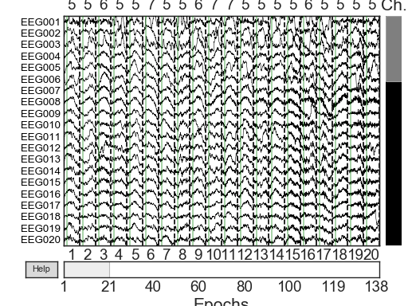
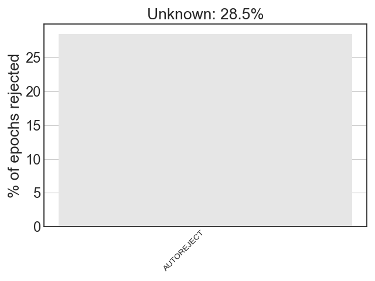

<!DOCTYPE html>

<html xmlns="http://www.w3.org/1999/xhtml">
  <head>
    <meta charset="utf-8" />
    <title>Visualize bad sensors per trial &#8212; autoreject 0.2.1 documentation</title>
    <link rel="stylesheet" href="../_static/bootstrap-sphinx.css" type="text/css" />
    <link rel="stylesheet" href="../_static/pygments.css" type="text/css" />
    <link rel="stylesheet" type="text/css" href="../_static/gallery.css" />
    <script type="text/javascript" id="documentation_options" data-url_root="../" src="../_static/documentation_options.js"></script>
    <script type="text/javascript" src="../_static/jquery.js"></script>
    <script type="text/javascript" src="../_static/underscore.js"></script>
    <script type="text/javascript" src="../_static/doctools.js"></script>
    <script type="text/javascript" src="../_static/language_data.js"></script>
    <script async="async" type="text/javascript" src="https://cdnjs.cloudflare.com/ajax/libs/mathjax/2.7.5/latest.js?config=TeX-AMS-MML_HTMLorMML"></script>
    <link rel="index" title="Index" href="../genindex.html" />
    <link rel="search" title="Search" href="../search.html" />
<meta charset='utf-8'>
<meta http-equiv='X-UA-Compatible' content='IE=edge,chrome=1'>
<meta name='viewport' content='width=device-width, initial-scale=1.0, maximum-scale=1'>
<meta name="apple-mobile-web-app-capable" content="yes">
<script type="text/javascript" src="../_static/js/jquery-1.11.0.min.js "></script>
<script type="text/javascript" src="../_static/js/jquery-fix.js "></script>
<script type="text/javascript" src="../_static/bootstrap-3.3.7/js/bootstrap.min.js "></script>
<script type="text/javascript" src="../_static/bootstrap-sphinx.js "></script>

  </head><body>

  <div id="navbar" class="navbar navbar-default navbar-fixed-top">
    <div class="container">
      <div class="navbar-header">
        <!-- .btn-navbar is used as the toggle for collapsed navbar content -->
        <button type="button" class="navbar-toggle" data-toggle="collapse" data-target=".nav-collapse">
          <span class="icon-bar"></span>
          <span class="icon-bar"></span>
          <span class="icon-bar"></span>
        </button>
        <a class="navbar-brand" href="../index.html">
          autoreject</a>
        <span class="navbar-text navbar-version pull-left"><b>0.2.1</b></span>
      </div>

        <div class="collapse navbar-collapse nav-collapse">
          <ul class="nav navbar-nav">
            
                <li><a href="index.html">Examples</a></li>
                <li><a href="../explanation.html">Explanation</a></li>
                <li><a href="../faq.html">FAQ</a></li>
                <li><a href="../api.html">API</a></li>
                <li><a href="../whats_new.html">What's new</a></li>
                <li><a href="https://github.com/autoreject/autoreject">GitHub</a></li>
            
            
              <li class="dropdown globaltoc-container">
  <a role="button"
     id="dLabelGlobalToc"
     data-toggle="dropdown"
     data-target="#"
     href="../index.html">Site <b class="caret"></b></a>
  <ul class="dropdown-menu globaltoc"
      role="menu"
      aria-labelledby="dLabelGlobalToc"></ul>
</li>
              
                <li class="dropdown">
  <a role="button"
     id="dLabelLocalToc"
     data-toggle="dropdown"
     data-target="#"
     href="#">Page <b class="caret"></b></a>
  <ul class="dropdown-menu localtoc"
      role="menu"
      aria-labelledby="dLabelLocalToc"><ul>
<li><a class="reference internal" href="#">Visualize bad sensors per trial</a></li>
</ul>
</ul>
</li>
              
            
            
            
            
            
              <li class="hidden-sm">
<div id="sourcelink">
  <a href="../_sources/auto_examples/plot_visualize_bad_epochs.rst.txt"
     rel="nofollow">Source</a>
</div></li>
            
          </ul>

          
            
<form class="navbar-form navbar-right" action="../search.html" method="get">
 <div class="form-group">
  <input type="text" name="q" class="form-control" placeholder="Search" />
 </div>
  <input type="hidden" name="check_keywords" value="yes" />
  <input type="hidden" name="area" value="default" />
</form>
          
        </div>
    </div>
  </div>

<div class="container content-container">
  
  <div class="sphx-glr-download-link-note admonition note">
<p class="admonition-title">Note</p>
<p>Click <a class="reference internal" href="#sphx-glr-download-auto-examples-plot-visualize-bad-epochs-py"><span class="std std-ref">here</span></a> to download the full example code</p>
</div>
<div class="sphx-glr-example-title section" id="visualize-bad-sensors-per-trial">
<span id="sphx-glr-auto-examples-plot-visualize-bad-epochs-py"></span><h1>Visualize bad sensors per trial<a class="headerlink" href="#visualize-bad-sensors-per-trial" title="Permalink to this headline">¶</a></h1>
<p>This example demonstrates how to use <code class="xref py py-mod docutils literal notranslate"><span class="pre">autoreject</span></code> to
visualize the bad sensors in each trial</p>
<div class="highlight-default notranslate"><div class="highlight"><pre><span></span><span class="c1"># Author: Mainak Jas &lt;mainak.jas@telecom-paristech.fr&gt;</span>
<span class="c1">#         Denis A. Engemann &lt;denis.engemann@gmail.com&gt;</span>
<span class="c1"># License: BSD (3-clause)</span>

<span class="c1"># sphinx_gallery_thumbnail_number = 2</span>
</pre></div>
</div>
<p>First, we download the data from OpenfMRI. We will download the tarfile,
extract the necessary files and delete the tar from the disk</p>
<div class="highlight-default notranslate"><div class="highlight"><pre><span></span><span class="kn">import</span> <span class="nn">os</span>
<span class="kn">import</span> <span class="nn">tarfile</span>

<span class="kn">import</span> <span class="nn">autoreject</span>
<span class="kn">from</span> <span class="nn">autoreject.utils</span> <span class="k">import</span> <a href="http://autoreject.github.io/generated/autoreject.utils.fetch_file.html#autoreject.utils.fetch_file" title="View documentation for autoreject.utils.fetch_file"><span class="n">fetch_file</span></a>

<span class="n">subject_id</span> <span class="o">=</span> <span class="mi">16</span>  <span class="c1"># OpenfMRI format of subject numbering</span>

<span class="n">src_url</span> <span class="o">=</span> <span class="p">(</span><span class="s1">&#39;http://openfmri.s3.amazonaws.com/tarballs/&#39;</span>
           <span class="s1">&#39;ds117_R0.1.1_sub016_raw.tgz&#39;</span><span class="p">)</span>
<span class="n">subject</span> <span class="o">=</span> <span class="s2">&quot;sub</span><span class="si">%03d</span><span class="s2">&quot;</span> <span class="o">%</span> <span class="n">subject_id</span>

<span class="nb">print</span><span class="p">(</span><span class="s2">&quot;processing subject: </span><span class="si">%s</span><span class="s2">&quot;</span> <span class="o">%</span> <span class="n">subject</span><span class="p">)</span>
<span class="n">base_path</span> <span class="o">=</span> <span class="n">os</span><span class="o">.</span><span class="n">path</span><span class="o">.</span><span class="n">join</span><span class="p">(</span>
    <span class="n">os</span><span class="o">.</span><span class="n">path</span><span class="o">.</span><span class="n">dirname</span><span class="p">(</span><span class="n">autoreject</span><span class="o">.</span><span class="vm">__file__</span><span class="p">),</span> <span class="s1">&#39;..&#39;</span><span class="p">,</span> <span class="s1">&#39;examples&#39;</span><span class="p">)</span>
<span class="n">target</span> <span class="o">=</span> <span class="n">os</span><span class="o">.</span><span class="n">path</span><span class="o">.</span><span class="n">join</span><span class="p">(</span><span class="n">base_path</span><span class="p">,</span> <span class="s1">&#39;ds117_R0.1.1_sub016_raw.tgz&#39;</span><span class="p">)</span>
<span class="k">if</span> <span class="ow">not</span> <span class="n">os</span><span class="o">.</span><span class="n">path</span><span class="o">.</span><span class="n">exists</span><span class="p">(</span><span class="n">os</span><span class="o">.</span><span class="n">path</span><span class="o">.</span><span class="n">join</span><span class="p">(</span><span class="n">base_path</span><span class="p">,</span> <span class="s1">&#39;ds117&#39;</span><span class="p">)):</span>
    <span class="k">if</span> <span class="ow">not</span> <span class="n">os</span><span class="o">.</span><span class="n">path</span><span class="o">.</span><span class="n">exists</span><span class="p">(</span><span class="n">target</span><span class="p">):</span>
        <a href="http://autoreject.github.io/generated/autoreject.utils.fetch_file.html#autoreject.utils.fetch_file" title="View documentation for autoreject.utils.fetch_file"><span class="n">fetch_file</span></a><span class="p">(</span><span class="n">src_url</span><span class="p">,</span> <span class="n">target</span><span class="p">)</span>
    <span class="n">tf</span> <span class="o">=</span> <span class="n">tarfile</span><span class="o">.</span><span class="n">open</span><span class="p">(</span><span class="n">target</span><span class="p">)</span>
    <span class="nb">print</span><span class="p">(</span><span class="s1">&#39;Extracting files. This may take a while ...&#39;</span><span class="p">)</span>
    <span class="n">tf</span><span class="o">.</span><span class="n">extractall</span><span class="p">(</span><span class="n">path</span><span class="o">=</span><span class="n">base_path</span><span class="p">,</span> <span class="n">members</span><span class="o">=</span><span class="n">tf</span><span class="o">.</span><span class="n">getmembers</span><span class="p">()[</span><span class="o">-</span><span class="mi">25</span><span class="p">:</span><span class="o">-</span><span class="mi">9</span><span class="p">:</span><span class="mi">3</span><span class="p">])</span>
    <span class="n">os</span><span class="o">.</span><span class="n">remove</span><span class="p">(</span><span class="n">target</span><span class="p">)</span>
</pre></div>
</div>
<p class="sphx-glr-script-out">Out:</p>
<div class="sphx-glr-script-out highlight-none notranslate"><div class="highlight"><pre><span></span>processing subject: sub016
</pre></div>
</div>
<p>We will create epochs with data starting 200 ms before trigger onset
and continuing up to 800 ms after that. The data contains visual stimuli for
famous faces, unfamiliar faces, as well as scrambled faces.</p>
<div class="highlight-default notranslate"><div class="highlight"><pre><span></span><span class="n">tmin</span><span class="p">,</span> <span class="n">tmax</span> <span class="o">=</span> <span class="o">-</span><span class="mf">0.2</span><span class="p">,</span> <span class="mf">0.8</span>
<span class="n">events_id</span> <span class="o">=</span> <span class="p">{</span><span class="s1">&#39;famous/first&#39;</span><span class="p">:</span> <span class="mi">5</span><span class="p">,</span> <span class="s1">&#39;famous/immediate&#39;</span><span class="p">:</span> <span class="mi">6</span><span class="p">,</span> <span class="s1">&#39;famous/long&#39;</span><span class="p">:</span> <span class="mi">7</span><span class="p">}</span>
</pre></div>
</div>
<p>Let us now load all the epochs into memory and concatenate them</p>
<div class="highlight-default notranslate"><div class="highlight"><pre><span></span><span class="kn">import</span> <span class="nn">mne</span>  <span class="c1"># noqa</span>

<span class="n">epochs</span> <span class="o">=</span> <span class="nb">list</span><span class="p">()</span>
<span class="k">for</span> <span class="n">run</span> <span class="ow">in</span> <span class="nb">range</span><span class="p">(</span><span class="mi">3</span><span class="p">,</span> <span class="mi">7</span><span class="p">):</span>
    <span class="n">run_fname</span> <span class="o">=</span> <span class="n">os</span><span class="o">.</span><span class="n">path</span><span class="o">.</span><span class="n">join</span><span class="p">(</span><span class="n">base_path</span><span class="p">,</span> <span class="s1">&#39;ds117&#39;</span><span class="p">,</span> <span class="s1">&#39;sub</span><span class="si">%03d</span><span class="s1">&#39;</span> <span class="o">%</span> <span class="n">subject_id</span><span class="p">,</span> <span class="s1">&#39;MEG&#39;</span><span class="p">,</span>
                             <span class="s1">&#39;run_</span><span class="si">%02d</span><span class="s1">_raw.fif&#39;</span> <span class="o">%</span> <span class="n">run</span><span class="p">)</span>
    <span class="n">raw</span> <span class="o">=</span> <a href="http://mne-tools.github.io/stable/generated/mne.io.read_raw_fif.html#mne.io.read_raw_fif" title="View documentation for mne.io.read_raw_fif"><span class="n">mne</span><span class="o">.</span><span class="n">io</span><span class="o">.</span><span class="n">read_raw_fif</span></a><span class="p">(</span><span class="n">run_fname</span><span class="p">,</span> <span class="n">preload</span><span class="o">=</span><span class="kc">True</span><span class="p">)</span>
    <span class="n">raw</span><span class="o">.</span><span class="n">pick_types</span><span class="p">(</span><span class="n">eeg</span><span class="o">=</span><span class="kc">True</span><span class="p">,</span> <span class="n">meg</span><span class="o">=</span><span class="kc">False</span><span class="p">,</span> <span class="n">stim</span><span class="o">=</span><span class="kc">True</span><span class="p">)</span>  <span class="c1"># less memory + computation</span>
    <span class="n">raw</span><span class="o">.</span><span class="n">filter</span><span class="p">(</span><span class="mf">1.</span><span class="p">,</span> <span class="mf">40.</span><span class="p">,</span> <span class="n">l_trans_bandwidth</span><span class="o">=</span><span class="mf">0.5</span><span class="p">,</span> <span class="n">n_jobs</span><span class="o">=</span><span class="mi">1</span><span class="p">,</span> <span class="n">verbose</span><span class="o">=</span><span class="s1">&#39;INFO&#39;</span><span class="p">)</span>

    <span class="n">raw</span><span class="o">.</span><span class="n">set_channel_types</span><span class="p">({</span><span class="s1">&#39;EEG061&#39;</span><span class="p">:</span> <span class="s1">&#39;eog&#39;</span><span class="p">,</span> <span class="s1">&#39;EEG062&#39;</span><span class="p">:</span> <span class="s1">&#39;eog&#39;</span><span class="p">,</span>
                           <span class="s1">&#39;EEG063&#39;</span><span class="p">:</span> <span class="s1">&#39;ecg&#39;</span><span class="p">,</span> <span class="s1">&#39;EEG064&#39;</span><span class="p">:</span> <span class="s1">&#39;misc&#39;</span><span class="p">})</span>
    <span class="n">raw</span><span class="o">.</span><span class="n">rename_channels</span><span class="p">({</span><span class="s1">&#39;EEG061&#39;</span><span class="p">:</span> <span class="s1">&#39;EOG061&#39;</span><span class="p">,</span> <span class="s1">&#39;EEG062&#39;</span><span class="p">:</span> <span class="s1">&#39;EOG062&#39;</span><span class="p">,</span>
                         <span class="s1">&#39;EEG063&#39;</span><span class="p">:</span> <span class="s1">&#39;ECG063&#39;</span><span class="p">,</span> <span class="s1">&#39;EEG064&#39;</span><span class="p">:</span> <span class="s1">&#39;MISC&#39;</span><span class="p">})</span>

    <span class="n">events</span> <span class="o">=</span> <a href="http://mne-tools.github.io/stable/generated/mne.find_events.html#mne.find_events" title="View documentation for mne.find_events"><span class="n">mne</span><span class="o">.</span><span class="n">find_events</span></a><span class="p">(</span><span class="n">raw</span><span class="p">,</span> <span class="n">stim_channel</span><span class="o">=</span><span class="s1">&#39;STI101&#39;</span><span class="p">,</span>
                             <span class="n">consecutive</span><span class="o">=</span><span class="s1">&#39;increasing&#39;</span><span class="p">,</span>
                             <span class="n">min_duration</span><span class="o">=</span><span class="mf">0.003</span><span class="p">,</span> <span class="n">verbose</span><span class="o">=</span><span class="kc">True</span><span class="p">)</span>
    <span class="c1"># Read epochs</span>
    <a href="http://mne-tools.github.io/stable/generated/mne.set_eeg_reference.html#mne.set_eeg_reference" title="View documentation for mne.io.set_eeg_reference"><span class="n">mne</span><span class="o">.</span><span class="n">io</span><span class="o">.</span><span class="n">set_eeg_reference</span></a><span class="p">(</span><span class="n">raw</span><span class="p">)</span>

    <span class="n">epoch</span> <span class="o">=</span> <a href="http://mne-tools.github.io/stable/generated/mne.Epochs.html#mne.Epochs" title="View documentation for mne.Epochs"><span class="n">mne</span><span class="o">.</span><span class="n">Epochs</span></a><span class="p">(</span><span class="n">raw</span><span class="p">,</span> <span class="n">events</span><span class="p">,</span> <span class="n">events_id</span><span class="p">,</span> <span class="n">tmin</span><span class="p">,</span> <span class="n">tmax</span><span class="p">,</span> <span class="n">proj</span><span class="o">=</span><span class="kc">True</span><span class="p">,</span>
                       <span class="n">baseline</span><span class="o">=</span><span class="kc">None</span><span class="p">,</span>
                       <span class="n">preload</span><span class="o">=</span><span class="kc">False</span><span class="p">,</span> <span class="n">reject</span><span class="o">=</span><span class="kc">None</span><span class="p">,</span> <span class="n">decim</span><span class="o">=</span><span class="mi">4</span><span class="p">)</span>
    <span class="n">epochs</span><span class="o">.</span><span class="n">append</span><span class="p">(</span><span class="n">epoch</span><span class="p">)</span>

    <span class="c1"># Same `dev_head_t` for all runs so that we can concatenate them.</span>
    <span class="n">epoch</span><span class="o">.</span><span class="n">info</span><span class="p">[</span><span class="s1">&#39;dev_head_t&#39;</span><span class="p">]</span> <span class="o">=</span> <span class="n">epochs</span><span class="p">[</span><span class="mi">0</span><span class="p">]</span><span class="o">.</span><span class="n">info</span><span class="p">[</span><span class="s1">&#39;dev_head_t&#39;</span><span class="p">]</span>


<span class="n">epochs</span> <span class="o">=</span> <a href="http://mne-tools.github.io/stable/generated/mne.concatenate_epochs.html#mne.concatenate_epochs" title="View documentation for mne.epochs.concatenate_epochs"><span class="n">mne</span><span class="o">.</span><span class="n">epochs</span><span class="o">.</span><span class="n">concatenate_epochs</span></a><span class="p">(</span><span class="n">epochs</span><span class="p">)</span>
</pre></div>
</div>
<p class="sphx-glr-script-out">Out:</p>
<div class="sphx-glr-script-out highlight-none notranslate"><div class="highlight"><pre><span></span>Opening raw data file /Users/mainak/Documents/github_repos/autoreject/autoreject/../examples/ds117/sub016/MEG/run_03_raw.fif...
    Read a total of 8 projection items:
        mag_ssp_upright.fif : PCA-mags-v1 (1 x 306)  idle
        mag_ssp_upright.fif : PCA-mags-v2 (1 x 306)  idle
        mag_ssp_upright.fif : PCA-mags-v3 (1 x 306)  idle
        mag_ssp_upright.fif : PCA-mags-v4 (1 x 306)  idle
        mag_ssp_upright.fif : PCA-mags-v5 (1 x 306)  idle
        grad_ssp_upright.fif : PCA-grad-v1 (1 x 306)  idle
        grad_ssp_upright.fif : PCA-grad-v2 (1 x 306)  idle
        grad_ssp_upright.fif : PCA-grad-v3 (1 x 306)  idle
    Range : 60500 ... 598399 =     55.000 ...   543.999 secs
Ready.
Current compensation grade : 0
Reading 0 ... 537899  =      0.000 ...   488.999 secs...
Filtering raw data in 1 contiguous segment
Setting up band-pass filter from 1 - 40 Hz

FIR filter parameters
---------------------
Designing a one-pass, zero-phase, non-causal bandpass filter:
- Windowed time-domain design (firwin) method
- Hamming window with 0.0194 passband ripple and 53 dB stopband attenuation
- Lower passband edge: 1.00
- Lower transition bandwidth: 0.50 Hz (-6 dB cutoff frequency: 0.75 Hz)
- Upper passband edge: 40.00 Hz
- Upper transition bandwidth: 10.00 Hz (-6 dB cutoff frequency: 45.00 Hz)
- Filter length: 7261 samples (6.601 sec)

294 events found
Event IDs: [   5    6    7   13   14   15   17   18   19  256  261  262  263  269
  270  273  274  275 4096 4101 4102 4103 4109 4110 4111 4113 4114 4115]
EEG channel type selected for re-referencing
Applying average reference.
Applying a custom EEG reference.
49 matching events found
No baseline correction applied
Not setting metadata
8 projection items activated
Opening raw data file /Users/mainak/Documents/github_repos/autoreject/autoreject/../examples/ds117/sub016/MEG/run_04_raw.fif...
    Read a total of 8 projection items:
        mag_ssp_upright.fif : PCA-mags-v1 (1 x 306)  idle
        mag_ssp_upright.fif : PCA-mags-v2 (1 x 306)  idle
        mag_ssp_upright.fif : PCA-mags-v3 (1 x 306)  idle
        mag_ssp_upright.fif : PCA-mags-v4 (1 x 306)  idle
        mag_ssp_upright.fif : PCA-mags-v5 (1 x 306)  idle
        grad_ssp_upright.fif : PCA-grad-v1 (1 x 306)  idle
        grad_ssp_upright.fif : PCA-grad-v2 (1 x 306)  idle
        grad_ssp_upright.fif : PCA-grad-v3 (1 x 306)  idle
    Range : 137500 ... 680899 =    125.000 ...   618.999 secs
Ready.
Current compensation grade : 0
Reading 0 ... 543399  =      0.000 ...   493.999 secs...
Filtering raw data in 1 contiguous segment
Setting up band-pass filter from 1 - 40 Hz

FIR filter parameters
---------------------
Designing a one-pass, zero-phase, non-causal bandpass filter:
- Windowed time-domain design (firwin) method
- Hamming window with 0.0194 passband ripple and 53 dB stopband attenuation
- Lower passband edge: 1.00
- Lower transition bandwidth: 0.50 Hz (-6 dB cutoff frequency: 0.75 Hz)
- Upper passband edge: 40.00 Hz
- Upper transition bandwidth: 10.00 Hz (-6 dB cutoff frequency: 45.00 Hz)
- Filter length: 7261 samples (6.601 sec)

296 events found
Event IDs: [   5    6    7   13   14   15   17   18   19  256  261  262  263  269
  270  273  274  275 4096 4101 4102 4103 4109 4110 4111 4113]
EEG channel type selected for re-referencing
Applying average reference.
Applying a custom EEG reference.
49 matching events found
No baseline correction applied
Not setting metadata
8 projection items activated
Opening raw data file /Users/mainak/Documents/github_repos/autoreject/autoreject/../examples/ds117/sub016/MEG/run_05_raw.fif...
    Read a total of 8 projection items:
        mag_ssp_upright.fif : PCA-mags-v1 (1 x 306)  idle
        mag_ssp_upright.fif : PCA-mags-v2 (1 x 306)  idle
        mag_ssp_upright.fif : PCA-mags-v3 (1 x 306)  idle
        mag_ssp_upright.fif : PCA-mags-v4 (1 x 306)  idle
        mag_ssp_upright.fif : PCA-mags-v5 (1 x 306)  idle
        grad_ssp_upright.fif : PCA-grad-v1 (1 x 306)  idle
        grad_ssp_upright.fif : PCA-grad-v2 (1 x 306)  idle
        grad_ssp_upright.fif : PCA-grad-v3 (1 x 306)  idle
    Range : 279400 ... 820599 =    254.000 ...   745.999 secs
Ready.
Current compensation grade : 0
Reading 0 ... 541199  =      0.000 ...   491.999 secs...
Filtering raw data in 1 contiguous segment
Setting up band-pass filter from 1 - 40 Hz

FIR filter parameters
---------------------
Designing a one-pass, zero-phase, non-causal bandpass filter:
- Windowed time-domain design (firwin) method
- Hamming window with 0.0194 passband ripple and 53 dB stopband attenuation
- Lower passband edge: 1.00
- Lower transition bandwidth: 0.50 Hz (-6 dB cutoff frequency: 0.75 Hz)
- Upper passband edge: 40.00 Hz
- Upper transition bandwidth: 10.00 Hz (-6 dB cutoff frequency: 45.00 Hz)
- Filter length: 7261 samples (6.601 sec)

295 events found
Event IDs: [   5    6    7   13   14   15   17   18   19  256  261  262  263  269
  270  271  273  274  275 4096 4101 4102 4103 4109 4110 4111 4115 4357
 4359]
EEG channel type selected for re-referencing
Applying average reference.
Applying a custom EEG reference.
47 matching events found
No baseline correction applied
Not setting metadata
8 projection items activated
Opening raw data file /Users/mainak/Documents/github_repos/autoreject/autoreject/../examples/ds117/sub016/MEG/run_06_raw.fif...
    Read a total of 8 projection items:
        mag_ssp_upright.fif : PCA-mags-v1 (1 x 306)  idle
        mag_ssp_upright.fif : PCA-mags-v2 (1 x 306)  idle
        mag_ssp_upright.fif : PCA-mags-v3 (1 x 306)  idle
        mag_ssp_upright.fif : PCA-mags-v4 (1 x 306)  idle
        mag_ssp_upright.fif : PCA-mags-v5 (1 x 306)  idle
        grad_ssp_upright.fif : PCA-grad-v1 (1 x 306)  idle
        grad_ssp_upright.fif : PCA-grad-v2 (1 x 306)  idle
        grad_ssp_upright.fif : PCA-grad-v3 (1 x 306)  idle
    Range : 140800 ... 680899 =    128.000 ...   618.999 secs
Ready.
Current compensation grade : 0
Reading 0 ... 540099  =      0.000 ...   490.999 secs...
Filtering raw data in 1 contiguous segment
Setting up band-pass filter from 1 - 40 Hz

FIR filter parameters
---------------------
Designing a one-pass, zero-phase, non-causal bandpass filter:
- Windowed time-domain design (firwin) method
- Hamming window with 0.0194 passband ripple and 53 dB stopband attenuation
- Lower passband edge: 1.00
- Lower transition bandwidth: 0.50 Hz (-6 dB cutoff frequency: 0.75 Hz)
- Upper passband edge: 40.00 Hz
- Upper transition bandwidth: 10.00 Hz (-6 dB cutoff frequency: 45.00 Hz)
- Filter length: 7261 samples (6.601 sec)

296 events found
Event IDs: [   5    6    7   13   14   15   17   18   19  256  261  262  263  269
  270  271  273  274  275 4096 4101 4102 4103 4109 4110 4111 4114]
EEG channel type selected for re-referencing
Applying average reference.
Applying a custom EEG reference.
48 matching events found
No baseline correction applied
Not setting metadata
8 projection items activated
Loading data for 49 events and 1101 original time points ...
0 bad epochs dropped
Loading data for 49 events and 1101 original time points ...
0 bad epochs dropped
Loading data for 47 events and 1101 original time points ...
0 bad epochs dropped
Loading data for 48 events and 1101 original time points ...
0 bad epochs dropped
193 matching events found
No baseline correction applied
Not setting metadata
0 bad epochs dropped
</pre></div>
</div>
<p>Now, we apply autoreject</p>
<div class="highlight-default notranslate"><div class="highlight"><pre><span></span><span class="kn">from</span> <span class="nn">autoreject</span> <span class="k">import</span> <a href="http://autoreject.github.io/generated/autoreject.AutoReject.html#autoreject.AutoReject" title="View documentation for autoreject.AutoReject"><span class="n">AutoReject</span></a><span class="p">,</span> <span class="n">compute_thresholds</span>  <span class="c1"># noqa</span>

<span class="n">this_epoch</span> <span class="o">=</span> <span class="n">epochs</span><span class="p">[</span><span class="s1">&#39;famous&#39;</span><span class="p">]</span>
<span class="n">exclude</span> <span class="o">=</span> <span class="p">[]</span>  <span class="c1"># XXX</span>
<span class="n">picks</span> <span class="o">=</span> <a href="http://mne-tools.github.io/stable/generated/mne.pick_types.html#mne.pick_types" title="View documentation for mne.pick_types"><span class="n">mne</span><span class="o">.</span><span class="n">pick_types</span></a><span class="p">(</span><span class="n">epochs</span><span class="o">.</span><span class="n">info</span><span class="p">,</span> <span class="n">meg</span><span class="o">=</span><span class="kc">False</span><span class="p">,</span> <span class="n">eeg</span><span class="o">=</span><span class="kc">True</span><span class="p">,</span> <span class="n">stim</span><span class="o">=</span><span class="kc">False</span><span class="p">,</span>
                       <span class="n">eog</span><span class="o">=</span><span class="kc">False</span><span class="p">,</span> <span class="n">exclude</span><span class="o">=</span><span class="n">exclude</span><span class="p">)</span>
</pre></div>
</div>
<p>Note that <a class="reference internal" href="../generated/autoreject.AutoReject.html#autoreject.AutoReject" title="autoreject.AutoReject"><code class="xref py py-class docutils literal notranslate"><span class="pre">autoreject.AutoReject</span></code></a> by design supports multiple
channels. If no picks are passed separate solutions will be computed for each
channel type and internally combines. This then readily supports cleaning
unseen epochs from the different channel types used during fit.
Here we only use a subset of channels to save time.</p>
<p>Also note that once the parameters are learned, any data can be repaired
that contains channels that were used during fit. This also means that time
may be saved by fitting <a class="reference internal" href="../generated/autoreject.AutoReject.html#autoreject.AutoReject" title="autoreject.AutoReject"><code class="xref py py-class docutils literal notranslate"><span class="pre">autoreject.AutoReject</span></code></a> on a
representative subsample of the data.</p>
<div class="highlight-default notranslate"><div class="highlight"><pre><span></span><span class="n">ar</span> <span class="o">=</span> <a href="http://autoreject.github.io/generated/autoreject.AutoReject.html#autoreject.AutoReject" title="View documentation for autoreject.AutoReject"><span class="n">AutoReject</span></a><span class="p">(</span><span class="n">picks</span><span class="o">=</span><span class="n">picks</span><span class="p">,</span> <span class="n">random_state</span><span class="o">=</span><span class="mi">42</span><span class="p">,</span> <span class="n">n_jobs</span><span class="o">=</span><span class="mi">1</span><span class="p">,</span> <span class="n">verbose</span><span class="o">=</span><span class="s1">&#39;tqdm&#39;</span><span class="p">)</span>

<span class="n">epochs_ar</span><span class="p">,</span> <span class="n">reject_log</span> <span class="o">=</span> <span class="n">ar</span><span class="o">.</span><span class="n">fit_transform</span><span class="p">(</span><span class="n">this_epoch</span><span class="p">,</span> <span class="n">return_log</span><span class="o">=</span><span class="kc">True</span><span class="p">)</span>
</pre></div>
</div>
<p class="sphx-glr-script-out">Out:</p>
<div class="sphx-glr-script-out highlight-none notranslate"><div class="highlight"><pre><span></span>Running autoreject on ch_type=eeg

Creating augmented epochs:   0%|          | 0/70 [00:00&lt;?, ?it/s]
Creating augmented epochs:   1%|1         | 1/70 [00:00&lt;00:43,  1.57it/s]
Creating augmented epochs:   7%|7         | 5/70 [00:00&lt;00:29,  2.20it/s]
Creating augmented epochs:  11%|#1        | 8/70 [00:00&lt;00:20,  3.05it/s]
Creating augmented epochs:  17%|#7        | 12/70 [00:00&lt;00:13,  4.18it/s]
Creating augmented epochs:  21%|##1       | 15/70 [00:01&lt;00:09,  5.60it/s]
Creating augmented epochs:  26%|##5       | 18/70 [00:01&lt;00:07,  7.34it/s]
Creating augmented epochs:  31%|###1      | 22/70 [00:01&lt;00:05,  9.56it/s]
Creating augmented epochs:  37%|###7      | 26/70 [00:01&lt;00:03, 12.23it/s]
Creating augmented epochs:  41%|####1     | 29/70 [00:01&lt;00:02, 14.80it/s]
Creating augmented epochs:  47%|####7     | 33/70 [00:01&lt;00:02, 17.68it/s]
Creating augmented epochs:  53%|#####2    | 37/70 [00:01&lt;00:01, 19.10it/s]
Creating augmented epochs:  57%|#####7    | 40/70 [00:02&lt;00:01, 19.02it/s]
Creating augmented epochs:  61%|######1   | 43/70 [00:02&lt;00:01, 19.21it/s]
Creating augmented epochs:  66%|######5   | 46/70 [00:02&lt;00:01, 20.45it/s]
Creating augmented epochs:  70%|#######   | 49/70 [00:02&lt;00:01, 20.50it/s]
Creating augmented epochs:  74%|#######4  | 52/70 [00:02&lt;00:00, 21.61it/s]
Creating augmented epochs:  79%|#######8  | 55/70 [00:02&lt;00:00, 22.59it/s]
Creating augmented epochs:  83%|########2 | 58/70 [00:02&lt;00:00, 23.19it/s]
Creating augmented epochs:  87%|########7 | 61/70 [00:02&lt;00:00, 23.91it/s]
Creating augmented epochs:  91%|#########1| 64/70 [00:03&lt;00:00, 19.73it/s]
Creating augmented epochs:  96%|#########5| 67/70 [00:03&lt;00:00, 21.61it/s]
Creating augmented epochs: 100%|##########| 70/70 [00:03&lt;00:00, 21.09it/s]

Computing thresholds ...:   0%|          | 0/70 [00:00&lt;?, ?it/s]
Computing thresholds ...:   1%|1         | 1/70 [00:01&lt;02:14,  1.94s/it]
Computing thresholds ...:   3%|2         | 2/70 [00:03&lt;02:13,  1.96s/it]
Computing thresholds ...:   4%|4         | 3/70 [00:05&lt;02:00,  1.80s/it]
Computing thresholds ...:   6%|5         | 4/70 [00:06&lt;01:52,  1.71s/it]
Computing thresholds ...:   7%|7         | 5/70 [00:08&lt;01:51,  1.71s/it]
Computing thresholds ...:   9%|8         | 6/70 [00:10&lt;01:49,  1.70s/it]
Computing thresholds ...:  10%|#         | 7/70 [00:11&lt;01:38,  1.57s/it]
Computing thresholds ...:  11%|#1        | 8/70 [00:12&lt;01:33,  1.52s/it]
Computing thresholds ...:  13%|#2        | 9/70 [00:14&lt;01:35,  1.57s/it]
Computing thresholds ...:  14%|#4        | 10/70 [00:16&lt;01:37,  1.62s/it]
Computing thresholds ...:  16%|#5        | 11/70 [00:18&lt;01:46,  1.81s/it]
Computing thresholds ...:  17%|#7        | 12/70 [00:19&lt;01:36,  1.67s/it]
Computing thresholds ...:  19%|#8        | 13/70 [00:21&lt;01:29,  1.58s/it]
Computing thresholds ...:  20%|##        | 14/70 [00:22&lt;01:24,  1.52s/it]
Computing thresholds ...:  21%|##1       | 15/70 [00:23&lt;01:20,  1.46s/it]
Computing thresholds ...:  23%|##2       | 16/70 [00:25&lt;01:17,  1.44s/it]
Computing thresholds ...:  24%|##4       | 17/70 [00:26&lt;01:14,  1.40s/it]
Computing thresholds ...:  26%|##5       | 18/70 [00:28&lt;01:13,  1.41s/it]
Computing thresholds ...:  27%|##7       | 19/70 [00:29&lt;01:11,  1.39s/it]
Computing thresholds ...:  29%|##8       | 20/70 [00:30&lt;01:09,  1.38s/it]
Computing thresholds ...:  30%|###       | 21/70 [00:32&lt;01:05,  1.35s/it]
Computing thresholds ...:  31%|###1      | 22/70 [00:33&lt;01:06,  1.39s/it]
Computing thresholds ...:  33%|###2      | 23/70 [00:35&lt;01:06,  1.42s/it]
Computing thresholds ...:  34%|###4      | 24/70 [00:36&lt;01:04,  1.40s/it]
Computing thresholds ...:  36%|###5      | 25/70 [00:37&lt;01:00,  1.34s/it]
Computing thresholds ...:  37%|###7      | 26/70 [00:39&lt;01:01,  1.41s/it]
Computing thresholds ...:  39%|###8      | 27/70 [00:41&lt;01:16,  1.79s/it]
Computing thresholds ...:  40%|####      | 28/70 [00:43&lt;01:13,  1.75s/it]
Computing thresholds ...:  41%|####1     | 29/70 [00:45&lt;01:14,  1.81s/it]
Computing thresholds ...:  43%|####2     | 30/70 [00:47&lt;01:09,  1.74s/it]
Computing thresholds ...:  44%|####4     | 31/70 [00:48&lt;01:02,  1.61s/it]
Computing thresholds ...:  46%|####5     | 32/70 [00:50&lt;01:04,  1.68s/it]
Computing thresholds ...:  47%|####7     | 33/70 [00:51&lt;00:59,  1.61s/it]
Computing thresholds ...:  49%|####8     | 34/70 [00:53&lt;00:57,  1.60s/it]
Computing thresholds ...:  50%|#####     | 35/70 [00:55&lt;01:04,  1.86s/it]
Computing thresholds ...:  51%|#####1    | 36/70 [00:56&lt;00:55,  1.63s/it]
Computing thresholds ...:  53%|#####2    | 37/70 [00:58&lt;00:50,  1.53s/it]
Computing thresholds ...:  54%|#####4    | 38/70 [00:59&lt;00:46,  1.46s/it]
Computing thresholds ...:  56%|#####5    | 39/70 [01:00&lt;00:46,  1.49s/it]
Computing thresholds ...:  57%|#####7    | 40/70 [01:02&lt;00:43,  1.45s/it]
Computing thresholds ...:  59%|#####8    | 41/70 [01:03&lt;00:39,  1.36s/it]
Computing thresholds ...:  60%|######    | 42/70 [01:04&lt;00:38,  1.37s/it]
Computing thresholds ...:  61%|######1   | 43/70 [01:06&lt;00:36,  1.35s/it]
Computing thresholds ...:  63%|######2   | 44/70 [01:07&lt;00:33,  1.30s/it]
Computing thresholds ...:  64%|######4   | 45/70 [01:08&lt;00:33,  1.34s/it]
Computing thresholds ...:  66%|######5   | 46/70 [01:09&lt;00:31,  1.30s/it]
Computing thresholds ...:  67%|######7   | 47/70 [01:11&lt;00:32,  1.41s/it]
Computing thresholds ...:  69%|######8   | 48/70 [01:14&lt;00:40,  1.82s/it]
Computing thresholds ...:  70%|#######   | 49/70 [01:20&lt;01:01,  2.95s/it]
Computing thresholds ...:  71%|#######1  | 50/70 [01:23&lt;01:04,  3.22s/it]
Computing thresholds ...:  73%|#######2  | 51/70 [01:25&lt;00:53,  2.80s/it]
Computing thresholds ...:  74%|#######4  | 52/70 [01:27&lt;00:44,  2.45s/it]
Computing thresholds ...:  76%|#######5  | 53/70 [01:28&lt;00:35,  2.11s/it]
Computing thresholds ...:  77%|#######7  | 54/70 [01:29&lt;00:29,  1.84s/it]
Computing thresholds ...:  79%|#######8  | 55/70 [01:31&lt;00:24,  1.66s/it]
Computing thresholds ...:  80%|########  | 56/70 [01:32&lt;00:22,  1.57s/it]
Computing thresholds ...:  81%|########1 | 57/70 [01:33&lt;00:19,  1.51s/it]
Computing thresholds ...:  83%|########2 | 58/70 [01:35&lt;00:17,  1.47s/it]
Computing thresholds ...:  84%|########4 | 59/70 [01:36&lt;00:16,  1.46s/it]
Computing thresholds ...:  86%|########5 | 60/70 [01:37&lt;00:13,  1.37s/it]
Computing thresholds ...:  87%|########7 | 61/70 [01:39&lt;00:11,  1.33s/it]
Computing thresholds ...:  89%|########8 | 62/70 [01:40&lt;00:10,  1.32s/it]
Computing thresholds ...:  90%|######### | 63/70 [01:41&lt;00:08,  1.28s/it]
Computing thresholds ...:  91%|#########1| 64/70 [01:42&lt;00:07,  1.29s/it]
Computing thresholds ...:  93%|#########2| 65/70 [01:44&lt;00:06,  1.27s/it]
Computing thresholds ...:  94%|#########4| 66/70 [01:45&lt;00:05,  1.29s/it]
Computing thresholds ...:  96%|#########5| 67/70 [01:46&lt;00:03,  1.26s/it]
Computing thresholds ...:  97%|#########7| 68/70 [01:47&lt;00:02,  1.22s/it]
Computing thresholds ...:  99%|#########8| 69/70 [01:49&lt;00:01,  1.25s/it]
Computing thresholds ...: 100%|##########| 70/70 [01:50&lt;00:00,  1.22s/it]


Repairing epochs:   0%|          | 0/193 [00:00&lt;?, ?it/s]


Repairing epochs:   5%|4         | 9/193 [00:00&lt;00:02, 83.98it/s]


Repairing epochs:  10%|9         | 19/193 [00:00&lt;00:02, 86.12it/s]


Repairing epochs:  15%|#4        | 28/193 [00:00&lt;00:01, 86.44it/s]


Repairing epochs:  19%|#9        | 37/193 [00:00&lt;00:01, 86.25it/s]


Repairing epochs:  24%|##3       | 46/193 [00:00&lt;00:01, 86.87it/s]


Repairing epochs:  28%|##8       | 55/193 [00:00&lt;00:01, 87.59it/s]


Repairing epochs:  34%|###3      | 65/193 [00:00&lt;00:01, 88.45it/s]


Repairing epochs:  38%|###8      | 74/193 [00:00&lt;00:01, 88.89it/s]


Repairing epochs:  44%|####3     | 84/193 [00:00&lt;00:01, 89.88it/s]


Repairing epochs:  49%|####8     | 94/193 [00:01&lt;00:01, 89.67it/s]


Repairing epochs:  53%|#####3    | 103/193 [00:01&lt;00:01, 87.92it/s]


Repairing epochs:  58%|#####8    | 112/193 [00:01&lt;00:00, 86.39it/s]


Repairing epochs:  63%|######3   | 122/193 [00:01&lt;00:00, 87.94it/s]


Repairing epochs:  68%|######7   | 131/193 [00:01&lt;00:00, 87.60it/s]


Repairing epochs:  73%|#######3  | 141/193 [00:01&lt;00:00, 88.40it/s]


Repairing epochs:  78%|#######7  | 150/193 [00:01&lt;00:00, 88.53it/s]


Repairing epochs:  83%|########2 | 160/193 [00:01&lt;00:00, 89.13it/s]


Repairing epochs:  88%|########8 | 170/193 [00:01&lt;00:00, 89.95it/s]


Repairing epochs:  93%|#########2| 179/193 [00:02&lt;00:00, 78.24it/s]


Repairing epochs:  97%|#########7| 188/193 [00:02&lt;00:00, 79.67it/s]


Repairing epochs: 100%|##########| 193/193 [00:02&lt;00:00, 86.55it/s]

n_interp:   0%|          | 0/3 [00:00&lt;?, ?it/s]


Repairing epochs:   0%|          | 0/193 [00:00&lt;?, ?it/s]


Repairing epochs:   2%|2         | 4/193 [00:00&lt;00:05, 35.88it/s]


Repairing epochs:   4%|4         | 8/193 [00:00&lt;00:05, 34.95it/s]


Repairing epochs:   6%|6         | 12/193 [00:00&lt;00:05, 34.51it/s]


Repairing epochs:   8%|8         | 16/193 [00:00&lt;00:05, 35.11it/s]


Repairing epochs:  10%|#         | 20/193 [00:00&lt;00:04, 34.86it/s]


Repairing epochs:  12%|#2        | 24/193 [00:00&lt;00:04, 34.74it/s]


Repairing epochs:  15%|#4        | 28/193 [00:00&lt;00:04, 35.49it/s]


Repairing epochs:  17%|#6        | 32/193 [00:00&lt;00:04, 35.46it/s]


Repairing epochs:  19%|#8        | 36/193 [00:01&lt;00:04, 35.56it/s]


Repairing epochs:  21%|##        | 40/193 [00:01&lt;00:04, 35.11it/s]


Repairing epochs:  23%|##2       | 44/193 [00:01&lt;00:04, 36.07it/s]


Repairing epochs:  25%|##4       | 48/193 [00:01&lt;00:04, 35.06it/s]


Repairing epochs:  27%|##6       | 52/193 [00:01&lt;00:04, 34.92it/s]


Repairing epochs:  29%|##9       | 56/193 [00:01&lt;00:03, 34.71it/s]


Repairing epochs:  31%|###1      | 60/193 [00:01&lt;00:03, 35.10it/s]


Repairing epochs:  33%|###3      | 64/193 [00:01&lt;00:03, 35.26it/s]


Repairing epochs:  35%|###5      | 68/193 [00:01&lt;00:03, 35.55it/s]


Repairing epochs:  37%|###7      | 72/193 [00:02&lt;00:03, 35.96it/s]


Repairing epochs:  39%|###9      | 76/193 [00:02&lt;00:03, 35.81it/s]


Repairing epochs:  41%|####1     | 80/193 [00:02&lt;00:03, 36.30it/s]


Repairing epochs:  44%|####3     | 84/193 [00:02&lt;00:03, 35.36it/s]


Repairing epochs:  46%|####5     | 88/193 [00:02&lt;00:03, 34.94it/s]


Repairing epochs:  48%|####7     | 92/193 [00:02&lt;00:02, 35.31it/s]


Repairing epochs:  50%|####9     | 96/193 [00:02&lt;00:02, 34.51it/s]


Repairing epochs:  52%|#####1    | 100/193 [00:02&lt;00:02, 35.45it/s]


Repairing epochs:  54%|#####3    | 104/193 [00:02&lt;00:02, 35.96it/s]


Repairing epochs:  56%|#####5    | 108/193 [00:03&lt;00:02, 35.30it/s]


Repairing epochs:  58%|#####8    | 112/193 [00:03&lt;00:02, 35.17it/s]


Repairing epochs:  60%|######    | 116/193 [00:03&lt;00:02, 34.78it/s]


Repairing epochs:  62%|######2   | 120/193 [00:03&lt;00:02, 34.90it/s]


Repairing epochs:  64%|######4   | 124/193 [00:03&lt;00:01, 34.97it/s]


Repairing epochs:  66%|######6   | 128/193 [00:03&lt;00:02, 29.67it/s]


Repairing epochs:  68%|######8   | 132/193 [00:03&lt;00:01, 31.30it/s]


Repairing epochs:  70%|#######   | 136/193 [00:03&lt;00:01, 32.22it/s]


Repairing epochs:  73%|#######2  | 140/193 [00:04&lt;00:01, 32.36it/s]


Repairing epochs:  75%|#######4  | 144/193 [00:04&lt;00:01, 31.59it/s]


Repairing epochs:  77%|#######6  | 148/193 [00:04&lt;00:01, 30.84it/s]


Repairing epochs:  79%|#######8  | 152/193 [00:04&lt;00:01, 30.63it/s]


Repairing epochs:  81%|########  | 156/193 [00:04&lt;00:01, 31.44it/s]


Repairing epochs:  83%|########2 | 160/193 [00:04&lt;00:01, 32.95it/s]


Repairing epochs:  85%|########4 | 164/193 [00:04&lt;00:00, 32.17it/s]


Repairing epochs:  87%|########7 | 168/193 [00:04&lt;00:00, 30.43it/s]


Repairing epochs:  89%|########9 | 172/193 [00:05&lt;00:00, 28.51it/s]


Repairing epochs:  91%|#########1| 176/193 [00:05&lt;00:00, 29.76it/s]


Repairing epochs:  93%|#########3| 180/193 [00:05&lt;00:00, 30.97it/s]


Repairing epochs:  96%|#########5| 185/193 [00:05&lt;00:00, 32.94it/s]


Repairing epochs:  98%|#########7| 189/193 [00:05&lt;00:00, 33.59it/s]


Repairing epochs: 100%|##########| 193/193 [00:05&lt;00:00, 33.50it/s]


Fold:   0%|          | 0/10 [00:00&lt;?, ?it/s]


Fold:  10%|#         | 1/10 [00:00&lt;00:05,  1.63it/s]


Fold:  20%|##        | 2/10 [00:01&lt;00:04,  1.67it/s]


Fold:  30%|###       | 3/10 [00:01&lt;00:04,  1.71it/s]


Fold:  40%|####      | 4/10 [00:02&lt;00:03,  1.71it/s]


Fold:  50%|#####     | 5/10 [00:02&lt;00:02,  1.73it/s]


Fold:  60%|######    | 6/10 [00:03&lt;00:02,  1.76it/s]


Fold:  70%|#######   | 7/10 [00:03&lt;00:01,  1.78it/s]


Fold:  80%|########  | 8/10 [00:04&lt;00:01,  1.79it/s]


Fold:  90%|######### | 9/10 [00:05&lt;00:00,  1.80it/s]


Fold: 100%|##########| 10/10 [00:05&lt;00:00,  1.81it/s]

n_interp:  33%|###3      | 1/3 [00:13&lt;00:26, 13.31s/it]


Repairing epochs:   0%|          | 0/193 [00:00&lt;?, ?it/s]


Repairing epochs:   2%|2         | 4/193 [00:00&lt;00:06, 30.76it/s]


Repairing epochs:   4%|4         | 8/193 [00:00&lt;00:05, 31.57it/s]


Repairing epochs:   6%|6         | 12/193 [00:00&lt;00:05, 30.98it/s]


Repairing epochs:   8%|7         | 15/193 [00:00&lt;00:05, 30.38it/s]


Repairing epochs:  10%|9         | 19/193 [00:00&lt;00:05, 31.21it/s]


Repairing epochs:  12%|#1        | 23/193 [00:00&lt;00:05, 32.63it/s]


Repairing epochs:  14%|#3        | 27/193 [00:00&lt;00:05, 32.98it/s]


Repairing epochs:  16%|#6        | 31/193 [00:00&lt;00:04, 33.65it/s]


Repairing epochs:  18%|#8        | 35/193 [00:01&lt;00:04, 34.02it/s]


Repairing epochs:  20%|##        | 39/193 [00:01&lt;00:04, 34.69it/s]


Repairing epochs:  22%|##2       | 43/193 [00:01&lt;00:04, 34.12it/s]


Repairing epochs:  24%|##4       | 47/193 [00:01&lt;00:04, 34.36it/s]


Repairing epochs:  26%|##6       | 51/193 [00:01&lt;00:04, 34.07it/s]


Repairing epochs:  28%|##8       | 55/193 [00:01&lt;00:03, 34.56it/s]


Repairing epochs:  31%|###       | 59/193 [00:01&lt;00:03, 34.86it/s]


Repairing epochs:  33%|###2      | 63/193 [00:01&lt;00:03, 35.41it/s]


Repairing epochs:  35%|###4      | 67/193 [00:02&lt;00:04, 29.84it/s]


Repairing epochs:  37%|###6      | 71/193 [00:02&lt;00:03, 31.76it/s]


Repairing epochs:  39%|###8      | 75/193 [00:02&lt;00:03, 32.78it/s]


Repairing epochs:  41%|####      | 79/193 [00:02&lt;00:03, 32.63it/s]


Repairing epochs:  43%|####3     | 83/193 [00:02&lt;00:03, 33.06it/s]


Repairing epochs:  45%|####5     | 87/193 [00:02&lt;00:03, 33.03it/s]


Repairing epochs:  47%|####7     | 91/193 [00:02&lt;00:03, 33.59it/s]


Repairing epochs:  49%|####9     | 95/193 [00:02&lt;00:02, 33.68it/s]


Repairing epochs:  51%|#####1    | 99/193 [00:02&lt;00:02, 33.75it/s]


Repairing epochs:  53%|#####3    | 103/193 [00:03&lt;00:02, 33.70it/s]


Repairing epochs:  55%|#####5    | 107/193 [00:03&lt;00:02, 33.75it/s]


Repairing epochs:  58%|#####7    | 111/193 [00:03&lt;00:02, 33.87it/s]


Repairing epochs:  60%|#####9    | 115/193 [00:03&lt;00:02, 33.93it/s]


Repairing epochs:  62%|######1   | 119/193 [00:03&lt;00:02, 34.41it/s]


Repairing epochs:  64%|######3   | 123/193 [00:03&lt;00:02, 34.38it/s]


Repairing epochs:  66%|######5   | 127/193 [00:03&lt;00:01, 34.50it/s]


Repairing epochs:  68%|######7   | 131/193 [00:03&lt;00:01, 33.95it/s]


Repairing epochs:  70%|######9   | 135/193 [00:04&lt;00:01, 33.47it/s]


Repairing epochs:  72%|#######2  | 139/193 [00:04&lt;00:01, 34.02it/s]


Repairing epochs:  74%|#######4  | 143/193 [00:04&lt;00:01, 34.31it/s]


Repairing epochs:  76%|#######6  | 147/193 [00:04&lt;00:01, 34.18it/s]


Repairing epochs:  78%|#######8  | 151/193 [00:04&lt;00:01, 34.39it/s]


Repairing epochs:  80%|########  | 155/193 [00:04&lt;00:01, 33.96it/s]


Repairing epochs:  82%|########2 | 159/193 [00:04&lt;00:01, 33.88it/s]


Repairing epochs:  84%|########4 | 163/193 [00:04&lt;00:00, 34.53it/s]


Repairing epochs:  87%|########6 | 167/193 [00:04&lt;00:00, 34.40it/s]


Repairing epochs:  89%|########8 | 171/193 [00:05&lt;00:00, 34.23it/s]


Repairing epochs:  91%|######### | 175/193 [00:05&lt;00:00, 34.06it/s]


Repairing epochs:  93%|#########2| 179/193 [00:05&lt;00:00, 33.43it/s]


Repairing epochs:  95%|#########4| 183/193 [00:05&lt;00:00, 34.54it/s]


Repairing epochs:  97%|#########6| 187/193 [00:05&lt;00:00, 33.69it/s]


Repairing epochs:  99%|#########8| 191/193 [00:05&lt;00:00, 33.61it/s]


Repairing epochs: 100%|##########| 193/193 [00:05&lt;00:00, 33.61it/s]


Fold:   0%|          | 0/10 [00:00&lt;?, ?it/s]


Fold:  10%|#         | 1/10 [00:00&lt;00:05,  1.70it/s]


Fold:  20%|##        | 2/10 [00:01&lt;00:04,  1.73it/s]


Fold:  30%|###       | 3/10 [00:01&lt;00:03,  1.76it/s]


Fold:  40%|####      | 4/10 [00:02&lt;00:03,  1.78it/s]


Fold:  50%|#####     | 5/10 [00:02&lt;00:02,  1.74it/s]


Fold:  60%|######    | 6/10 [00:03&lt;00:02,  1.72it/s]


Fold:  70%|#######   | 7/10 [00:03&lt;00:01,  1.76it/s]


Fold:  80%|########  | 8/10 [00:04&lt;00:01,  1.73it/s]


Fold:  90%|######### | 9/10 [00:05&lt;00:00,  1.76it/s]


Fold: 100%|##########| 10/10 [00:05&lt;00:00,  1.78it/s]

n_interp:  67%|######6   | 2/3 [00:26&lt;00:13, 13.13s/it]


Repairing epochs:   0%|          | 0/193 [00:00&lt;?, ?it/s]


Repairing epochs:   2%|2         | 4/193 [00:00&lt;00:05, 32.91it/s]


Repairing epochs:   4%|4         | 8/193 [00:00&lt;00:05, 32.88it/s]


Repairing epochs:   6%|6         | 12/193 [00:00&lt;00:05, 32.59it/s]


Repairing epochs:   8%|8         | 16/193 [00:00&lt;00:05, 33.33it/s]


Repairing epochs:  10%|#         | 20/193 [00:00&lt;00:05, 31.85it/s]


Repairing epochs:  12%|#1        | 23/193 [00:00&lt;00:05, 31.19it/s]


Repairing epochs:  14%|#3        | 27/193 [00:00&lt;00:05, 32.25it/s]


Repairing epochs:  16%|#6        | 31/193 [00:00&lt;00:04, 33.74it/s]


Repairing epochs:  18%|#8        | 35/193 [00:01&lt;00:04, 34.10it/s]


Repairing epochs:  20%|##        | 39/193 [00:01&lt;00:04, 34.41it/s]


Repairing epochs:  22%|##2       | 43/193 [00:01&lt;00:05, 28.91it/s]


Repairing epochs:  24%|##4       | 47/193 [00:01&lt;00:04, 30.20it/s]


Repairing epochs:  26%|##6       | 51/193 [00:01&lt;00:04, 31.70it/s]


Repairing epochs:  28%|##8       | 55/193 [00:01&lt;00:04, 33.04it/s]


Repairing epochs:  31%|###       | 59/193 [00:01&lt;00:04, 32.77it/s]


Repairing epochs:  33%|###2      | 63/193 [00:01&lt;00:03, 33.47it/s]


Repairing epochs:  35%|###4      | 67/193 [00:02&lt;00:03, 33.22it/s]


Repairing epochs:  37%|###6      | 71/193 [00:02&lt;00:03, 33.55it/s]


Repairing epochs:  39%|###8      | 75/193 [00:02&lt;00:03, 34.34it/s]


Repairing epochs:  41%|####      | 79/193 [00:02&lt;00:03, 35.03it/s]


Repairing epochs:  43%|####3     | 83/193 [00:02&lt;00:03, 35.05it/s]


Repairing epochs:  45%|####5     | 87/193 [00:02&lt;00:03, 33.90it/s]


Repairing epochs:  47%|####7     | 91/193 [00:02&lt;00:03, 33.90it/s]


Repairing epochs:  49%|####9     | 95/193 [00:02&lt;00:02, 34.57it/s]


Repairing epochs:  51%|#####1    | 99/193 [00:02&lt;00:02, 33.17it/s]


Repairing epochs:  53%|#####3    | 103/193 [00:03&lt;00:02, 33.74it/s]


Repairing epochs:  55%|#####5    | 107/193 [00:03&lt;00:02, 34.10it/s]


Repairing epochs:  58%|#####7    | 111/193 [00:03&lt;00:02, 35.16it/s]


Repairing epochs:  60%|#####9    | 115/193 [00:03&lt;00:02, 34.61it/s]


Repairing epochs:  62%|######1   | 119/193 [00:03&lt;00:02, 34.69it/s]


Repairing epochs:  64%|######3   | 123/193 [00:03&lt;00:02, 34.63it/s]


Repairing epochs:  66%|######5   | 127/193 [00:03&lt;00:01, 33.29it/s]


Repairing epochs:  68%|######7   | 131/193 [00:03&lt;00:01, 33.09it/s]


Repairing epochs:  70%|######9   | 135/193 [00:04&lt;00:01, 34.63it/s]


Repairing epochs:  72%|#######2  | 139/193 [00:04&lt;00:01, 34.41it/s]


Repairing epochs:  74%|#######4  | 143/193 [00:04&lt;00:01, 35.09it/s]


Repairing epochs:  76%|#######6  | 147/193 [00:04&lt;00:01, 35.51it/s]


Repairing epochs:  78%|#######8  | 151/193 [00:04&lt;00:01, 36.14it/s]


Repairing epochs:  81%|########  | 156/193 [00:04&lt;00:00, 37.50it/s]


Repairing epochs:  83%|########2 | 160/193 [00:04&lt;00:00, 34.50it/s]


Repairing epochs:  85%|########4 | 164/193 [00:04&lt;00:00, 34.46it/s]


Repairing epochs:  87%|########7 | 168/193 [00:04&lt;00:00, 33.36it/s]


Repairing epochs:  89%|########9 | 172/193 [00:05&lt;00:00, 34.24it/s]


Repairing epochs:  91%|#########1| 176/193 [00:05&lt;00:00, 34.33it/s]


Repairing epochs:  93%|#########3| 180/193 [00:05&lt;00:00, 33.64it/s]


Repairing epochs:  95%|#########5| 184/193 [00:05&lt;00:00, 33.13it/s]


Repairing epochs:  97%|#########7| 188/193 [00:05&lt;00:00, 30.90it/s]


Repairing epochs:  99%|#########9| 192/193 [00:05&lt;00:00, 29.20it/s]


Repairing epochs: 100%|##########| 193/193 [00:05&lt;00:00, 33.25it/s]


Fold:   0%|          | 0/10 [00:00&lt;?, ?it/s]


Fold:  10%|#         | 1/10 [00:00&lt;00:03,  2.70it/s]


Fold:  20%|##        | 2/10 [00:00&lt;00:02,  2.77it/s]


Fold:  30%|###       | 3/10 [00:01&lt;00:02,  2.81it/s]


Fold:  40%|####      | 4/10 [00:01&lt;00:02,  2.84it/s]


Fold:  50%|#####     | 5/10 [00:01&lt;00:01,  2.89it/s]


Fold:  60%|######    | 6/10 [00:02&lt;00:01,  2.93it/s]


Fold:  70%|#######   | 7/10 [00:02&lt;00:01,  2.92it/s]


Fold:  80%|########  | 8/10 [00:02&lt;00:00,  2.85it/s]


Fold:  90%|######### | 9/10 [00:03&lt;00:00,  2.87it/s]


Fold: 100%|##########| 10/10 [00:03&lt;00:00,  2.92it/s]

n_interp: 100%|##########| 3/3 [00:35&lt;00:00, 12.05s/it]


Estimated consensus=0.10 and n_interpolate=4


Repairing epochs:   0%|          | 0/193 [00:00&lt;?, ?it/s]


Repairing epochs:   2%|2         | 4/193 [00:00&lt;00:05, 34.84it/s]


Repairing epochs:   4%|4         | 8/193 [00:00&lt;00:05, 34.10it/s]


Repairing epochs:   5%|5         | 10/193 [00:00&lt;00:06, 26.47it/s]


Repairing epochs:   7%|7         | 14/193 [00:00&lt;00:06, 28.67it/s]


Repairing epochs:   9%|9         | 18/193 [00:00&lt;00:05, 30.27it/s]


Repairing epochs:  11%|#1        | 22/193 [00:00&lt;00:05, 32.30it/s]


Repairing epochs:  13%|#3        | 26/193 [00:00&lt;00:05, 32.64it/s]


Repairing epochs:  16%|#5        | 30/193 [00:00&lt;00:04, 33.65it/s]


Repairing epochs:  18%|#7        | 34/193 [00:01&lt;00:04, 33.94it/s]


Repairing epochs:  20%|#9        | 38/193 [00:01&lt;00:04, 34.19it/s]


Repairing epochs:  22%|##1       | 42/193 [00:01&lt;00:04, 33.64it/s]


Repairing epochs:  24%|##3       | 46/193 [00:01&lt;00:04, 34.30it/s]


Repairing epochs:  26%|##5       | 50/193 [00:01&lt;00:04, 34.08it/s]


Repairing epochs:  28%|##7       | 54/193 [00:01&lt;00:04, 34.56it/s]


Repairing epochs:  30%|###       | 58/193 [00:01&lt;00:03, 34.95it/s]


Repairing epochs:  32%|###2      | 62/193 [00:01&lt;00:03, 35.33it/s]


Repairing epochs:  34%|###4      | 66/193 [00:01&lt;00:03, 34.28it/s]


Repairing epochs:  36%|###6      | 70/193 [00:02&lt;00:03, 33.19it/s]


Repairing epochs:  38%|###8      | 74/193 [00:02&lt;00:03, 33.61it/s]


Repairing epochs:  40%|####      | 78/193 [00:02&lt;00:03, 33.72it/s]


Repairing epochs:  42%|####2     | 82/193 [00:02&lt;00:03, 32.99it/s]


Repairing epochs:  45%|####4     | 86/193 [00:02&lt;00:03, 31.23it/s]


Repairing epochs:  47%|####6     | 90/193 [00:02&lt;00:03, 31.50it/s]


Repairing epochs:  49%|####8     | 94/193 [00:02&lt;00:03, 32.17it/s]


Repairing epochs:  51%|#####     | 98/193 [00:02&lt;00:02, 32.84it/s]


Repairing epochs:  53%|#####2    | 102/193 [00:03&lt;00:02, 34.01it/s]


Repairing epochs:  55%|#####4    | 106/193 [00:03&lt;00:02, 33.44it/s]


Repairing epochs:  57%|#####6    | 110/193 [00:03&lt;00:02, 33.08it/s]


Repairing epochs:  59%|#####9    | 114/193 [00:03&lt;00:02, 34.21it/s]


Repairing epochs:  61%|######1   | 118/193 [00:03&lt;00:02, 33.12it/s]


Repairing epochs:  63%|######3   | 122/193 [00:03&lt;00:02, 31.97it/s]


Repairing epochs:  65%|######5   | 126/193 [00:03&lt;00:02, 32.09it/s]


Repairing epochs:  67%|######7   | 130/193 [00:03&lt;00:01, 32.71it/s]


Repairing epochs:  69%|######9   | 134/193 [00:04&lt;00:01, 33.12it/s]


Repairing epochs:  72%|#######1  | 138/193 [00:04&lt;00:01, 33.40it/s]


Repairing epochs:  74%|#######3  | 142/193 [00:04&lt;00:01, 33.87it/s]


Repairing epochs:  76%|#######5  | 146/193 [00:04&lt;00:01, 33.33it/s]


Repairing epochs:  78%|#######7  | 150/193 [00:04&lt;00:01, 33.68it/s]


Repairing epochs:  80%|#######9  | 154/193 [00:04&lt;00:01, 33.37it/s]


Repairing epochs:  82%|########1 | 158/193 [00:04&lt;00:01, 32.52it/s]


Repairing epochs:  84%|########3 | 162/193 [00:04&lt;00:00, 32.36it/s]


Repairing epochs:  86%|########6 | 166/193 [00:05&lt;00:00, 31.55it/s]


Repairing epochs:  88%|########8 | 170/193 [00:05&lt;00:00, 29.66it/s]


Repairing epochs:  90%|######### | 174/193 [00:05&lt;00:00, 31.00it/s]


Repairing epochs:  92%|#########2| 178/193 [00:05&lt;00:00, 30.44it/s]


Repairing epochs:  94%|#########4| 182/193 [00:05&lt;00:00, 29.94it/s]


Repairing epochs:  96%|#########6| 186/193 [00:05&lt;00:00, 28.20it/s]


Repairing epochs:  98%|#########7| 189/193 [00:05&lt;00:00, 27.63it/s]


Repairing epochs:  99%|#########9| 192/193 [00:05&lt;00:00, 26.95it/s]


Repairing epochs: 100%|##########| 193/193 [00:05&lt;00:00, 32.19it/s]Dropped 55 epochs
</pre></div>
</div>
<p>We can visualize the cross validation curve over two variables</p>
<div class="highlight-default notranslate"><div class="highlight"><pre><span></span><span class="kn">import</span> <span class="nn">numpy</span> <span class="k">as</span> <span class="nn">np</span>  <span class="c1"># noqa</span>
<span class="kn">import</span> <span class="nn">matplotlib.pyplot</span> <span class="k">as</span> <span class="nn">plt</span>  <span class="c1"># noqa</span>
<span class="kn">import</span> <span class="nn">matplotlib.patches</span> <span class="k">as</span> <span class="nn">patches</span>  <span class="c1"># noqa</span>
<span class="kn">from</span> <span class="nn">autoreject</span> <span class="k">import</span> <span class="n">set_matplotlib_defaults</span>  <span class="c1"># noqa</span>

<span class="n">set_matplotlib_defaults</span><span class="p">(</span><span class="n">plt</span><span class="p">,</span> <span class="n">style</span><span class="o">=</span><span class="s1">&#39;seaborn-white&#39;</span><span class="p">)</span>
<span class="n">loss</span> <span class="o">=</span> <span class="n">ar</span><span class="o">.</span><span class="n">loss_</span><span class="p">[</span><span class="s1">&#39;eeg&#39;</span><span class="p">]</span><span class="o">.</span><span class="n">mean</span><span class="p">(</span><span class="n">axis</span><span class="o">=-</span><span class="mi">1</span><span class="p">)</span>  <span class="c1"># losses are stored by channel type.</span>

<span class="n">plt</span><span class="o">.</span><span class="n">matshow</span><span class="p">(</span><span class="n">loss</span><span class="o">.</span><span class="n">T</span> <span class="o">*</span> <span class="mf">1e6</span><span class="p">,</span> <span class="n">cmap</span><span class="o">=</span><span class="n">plt</span><span class="o">.</span><span class="n">get_cmap</span><span class="p">(</span><span class="s1">&#39;viridis&#39;</span><span class="p">))</span>
<span class="n">plt</span><span class="o">.</span><span class="n">xticks</span><span class="p">(</span><span class="nb">range</span><span class="p">(</span><span class="nb">len</span><span class="p">(</span><span class="n">ar</span><span class="o">.</span><span class="n">consensus</span><span class="p">)),</span> <span class="p">[</span><span class="s1">&#39;</span><span class="si">%.1f</span><span class="s1">&#39;</span> <span class="o">%</span> <span class="n">c</span> <span class="k">for</span> <span class="n">c</span> <span class="ow">in</span> <span class="n">ar</span><span class="o">.</span><span class="n">consensus</span><span class="p">])</span>
<span class="n">plt</span><span class="o">.</span><span class="n">yticks</span><span class="p">(</span><span class="nb">range</span><span class="p">(</span><span class="nb">len</span><span class="p">(</span><span class="n">ar</span><span class="o">.</span><span class="n">n_interpolate</span><span class="p">)),</span> <span class="n">ar</span><span class="o">.</span><span class="n">n_interpolate</span><span class="p">)</span>

<span class="c1"># Draw rectangle at location of best parameters</span>
<span class="n">ax</span> <span class="o">=</span> <span class="n">plt</span><span class="o">.</span><span class="n">gca</span><span class="p">()</span>
<span class="n">idx</span><span class="p">,</span> <span class="n">jdx</span> <span class="o">=</span> <a href="http://docs.scipy.org/doc/numpy-1.9.1/reference/generated/numpy.html#numpy.unravel_index" title="View documentation for numpy.unravel_index"><span class="n">np</span><span class="o">.</span><span class="n">unravel_index</span></a><span class="p">(</span><span class="n">loss</span><span class="o">.</span><span class="n">argmin</span><span class="p">(),</span> <span class="n">loss</span><span class="o">.</span><span class="n">shape</span><span class="p">)</span>
<span class="n">rect</span> <span class="o">=</span> <span class="n">patches</span><span class="o">.</span><span class="n">Rectangle</span><span class="p">((</span><span class="n">idx</span> <span class="o">-</span> <span class="mf">0.5</span><span class="p">,</span> <span class="n">jdx</span> <span class="o">-</span> <span class="mf">0.5</span><span class="p">),</span> <span class="mi">1</span><span class="p">,</span> <span class="mi">1</span><span class="p">,</span> <span class="n">linewidth</span><span class="o">=</span><span class="mi">2</span><span class="p">,</span>
                         <span class="n">edgecolor</span><span class="o">=</span><span class="s1">&#39;r&#39;</span><span class="p">,</span> <span class="n">facecolor</span><span class="o">=</span><span class="s1">&#39;none&#39;</span><span class="p">)</span>
<span class="n">ax</span><span class="o">.</span><span class="n">add_patch</span><span class="p">(</span><span class="n">rect</span><span class="p">)</span>
<span class="n">ax</span><span class="o">.</span><span class="n">xaxis</span><span class="o">.</span><span class="n">set_ticks_position</span><span class="p">(</span><span class="s1">&#39;bottom&#39;</span><span class="p">)</span>
<span class="n">plt</span><span class="o">.</span><span class="n">xlabel</span><span class="p">(</span><span class="sa">r</span><span class="s1">&#39;Consensus percentage $\kappa$&#39;</span><span class="p">)</span>
<span class="n">plt</span><span class="o">.</span><span class="n">ylabel</span><span class="p">(</span><span class="sa">r</span><span class="s1">&#39;Max sensors interpolated $\rho$&#39;</span><span class="p">)</span>
<span class="n">plt</span><span class="o">.</span><span class="n">title</span><span class="p">(</span><span class="s1">&#39;Mean cross validation error (x 1e6)&#39;</span><span class="p">)</span>
<span class="n">plt</span><span class="o">.</span><span class="n">colorbar</span><span class="p">()</span>
<span class="n">plt</span><span class="o">.</span><span class="n">show</span><span class="p">()</span>
</pre></div>
</div>

<p class="sphx-glr-script-out">Out:</p>
<div class="sphx-glr-script-out highlight-none notranslate"><div class="highlight"><pre><span></span>/Users/mainak/Documents/github_repos/autoreject/examples/plot_visualize_bad_epochs.py:139: UserWarning: Matplotlib is currently using agg, which is a non-GUI backend, so cannot show the figure.
  plt.show()
</pre></div>
</div>
<p>… and visualize the bad epochs and sensors. Bad sensors which have been
interpolated are in blue. Bad sensors which are not interpolated are in red.
Bad trials are also in red.</p>
<div class="highlight-default notranslate"><div class="highlight"><pre><span></span><span class="n">scalings</span> <span class="o">=</span> <span class="nb">dict</span><span class="p">(</span><span class="n">eeg</span><span class="o">=</span><span class="mf">40e-6</span><span class="p">)</span>
<span class="n">reject_log</span><span class="o">.</span><span class="n">plot_epochs</span><span class="p">(</span><span class="n">this_epoch</span><span class="p">,</span> <span class="n">scalings</span><span class="o">=</span><span class="n">scalings</span><span class="p">)</span>
</pre></div>
</div>

<p>… and the epochs after cleaning with autoreject</p>
<div class="highlight-default notranslate"><div class="highlight"><pre><span></span><span class="n">epochs_ar</span><span class="o">.</span><span class="n">plot</span><span class="p">(</span><span class="n">scalings</span><span class="o">=</span><span class="n">scalings</span><span class="p">)</span>
</pre></div>
</div>

<p>The epochs dropped by autoreject are also stored in epochs.drop_log</p>
<div class="highlight-default notranslate"><div class="highlight"><pre><span></span><span class="n">epochs_ar</span><span class="o">.</span><span class="n">plot_drop_log</span><span class="p">()</span>
</pre></div>
</div>

<p>Finally, the evoked before and after autoreject, for sanity check. We use
the <code class="docutils literal notranslate"><span class="pre">spatial_colors</span></code> argument from MNE as it allows us to see that
the eyeblinks have not yet been cleaned but the bad channels have been
repaired.</p>
<div class="highlight-default notranslate"><div class="highlight"><pre><span></span><span class="n">ylim</span> <span class="o">=</span> <span class="nb">dict</span><span class="p">(</span><span class="n">eeg</span><span class="o">=</span><span class="p">(</span><span class="o">-</span><span class="mi">15</span><span class="p">,</span> <span class="mi">15</span><span class="p">))</span>
<span class="n">epochs</span><span class="o">.</span><span class="n">average</span><span class="p">()</span><span class="o">.</span><span class="n">plot</span><span class="p">(</span><span class="n">ylim</span><span class="o">=</span><span class="n">ylim</span><span class="p">,</span> <span class="n">spatial_colors</span><span class="o">=</span><span class="kc">True</span><span class="p">)</span>
<span class="n">epochs_ar</span><span class="o">.</span><span class="n">average</span><span class="p">()</span><span class="o">.</span><span class="n">plot</span><span class="p">(</span><span class="n">ylim</span><span class="o">=</span><span class="n">ylim</span><span class="p">,</span> <span class="n">spatial_colors</span><span class="o">=</span><span class="kc">True</span><span class="p">)</span>
</pre></div>
</div>
<ul class="sphx-glr-horizontal">
<li>
</li>
<li>
</li>
</ul>
<p class="sphx-glr-timing"><strong>Total running time of the script:</strong> ( 4 minutes  2.261 seconds)</p>
<div class="sphx-glr-footer class sphx-glr-footer-example docutils container" id="sphx-glr-download-auto-examples-plot-visualize-bad-epochs-py">
<div class="sphx-glr-download docutils container">
<p><a class="reference download internal" download="" href="../_downloads/f60e660899433b5f5550956cfc805dbf/plot_visualize_bad_epochs.py"><code class="xref download docutils literal notranslate"><span class="pre">Download</span> <span class="pre">Python</span> <span class="pre">source</span> <span class="pre">code:</span> <span class="pre">plot_visualize_bad_epochs.py</span></code></a></p>
</div>
<div class="sphx-glr-download docutils container">
<p><a class="reference download internal" download="" href="../_downloads/8e3ddb5519fc552bbf0abff59fcf4f1f/plot_visualize_bad_epochs.ipynb"><code class="xref download docutils literal notranslate"><span class="pre">Download</span> <span class="pre">Jupyter</span> <span class="pre">notebook:</span> <span class="pre">plot_visualize_bad_epochs.ipynb</span></code></a></p>
</div>
</div>
<p class="sphx-glr-signature"><a class="reference external" href="https://sphinx-gallery.github.io">Gallery generated by Sphinx-Gallery</a></p>
</div>


</div>

<!-- Github "fork me" ribbon -->
<a href="https://github.com/autoreject/autoreject"></a>
<footer class="footer">
  <div class="container">
    <p class="pull-right">
      <a href="#">Back to top</a>
      
    </p>
    <p>
        &copy; Copyright 2016, Mainak Jas.<br/>
      Created using <a href="http://sphinx-doc.org/">Sphinx</a> 2.1.2.<br/>
    </p>
  </div>
</footer>
  </body>
</html>